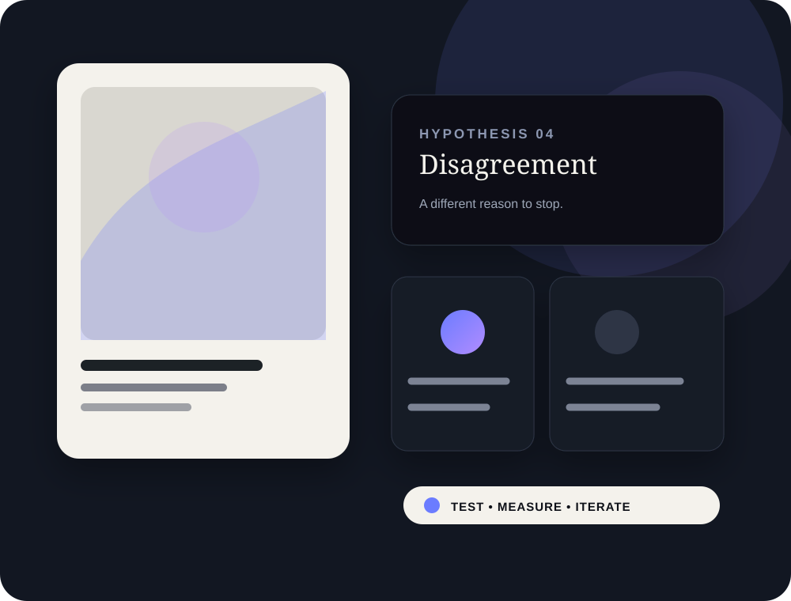

AI-assisted / human-led
Creative that feels made, not generated.
Cornerstone AI Assets builds and tests creator-led social content, product visuals and short-form creative for brands that need more than another generic content calendar.

01 · StrategyContext, audience and a real reason to care.
02 · ProductionSix distinct concepts, produced as actual assets.
03 · LearningPublish, measure, find the winner, iterate.
The point
We are not selling AI content.
We build a system for discovering which creative deserves attention.
AI is useful because it makes variation affordable. It is not the idea, the taste or the point of view. Every concept starts with human context, product truth and a clear psychological reason to stop, watch or swipe.
Creative territory
01 · Creator lab
Cara + Lila
Believable people, distinct personalities, real product contexts and repeatable creative testing.
02 · Photo mode
TikTok slideshows
Hook, tension, payoff and swipe logic — not six pretty images sitting next to each other.
03 · Brand tests
Creative sprints
One product. Six hypotheses. A portfolio that gives the market something to choose from.
The operating loop
Brief → test → learn → scale.
01 · Brief
Context
Account, audience, product, platform, purpose.
02 · Think
Hypotheses
Six genuinely different creative reasons to care.
03 · Make
Produce
Still, carousel, Reel or slideshow.
04 · Ship
Publish
Put the portfolio into the real feed.
05 · Read
Measure
Compare creative behaviour and audience response.
06 · Repeat
Iterate
Five intelligent variations from winners.
Built for brands that care about the work
One strong test beats another month of filler.
Human context
Creative hypotheses
Measured learning